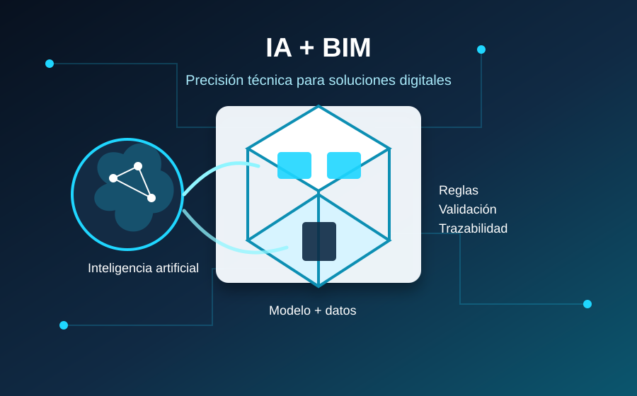
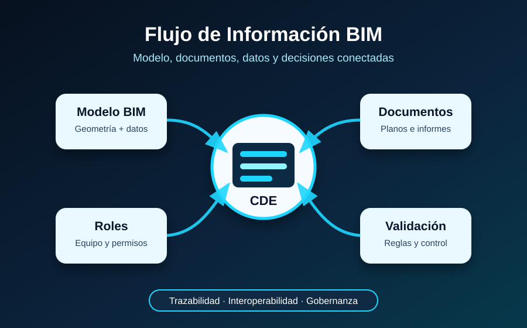
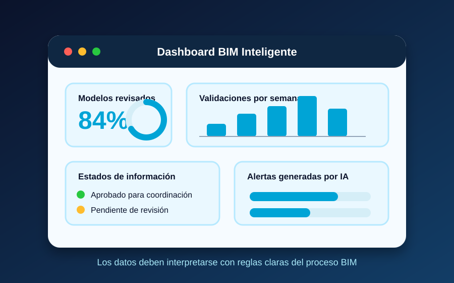

Innovar con IA en BIM exige precisión
La inteligencia artificial está cambiando la forma de crear herramientas digitales para proyectos BIM. Hoy es posible desarrollar scripts, tableros, validadores, visores e integraciones con mucha más rapidez; sin embargo, la velocidad no garantiza que una solución sea correcta, útil o confiable.

Sobre el tema
La IA puede ayudar a construir más rápido, pero necesita instrucciones claras. Si el profesional no define bien las reglas del problema, la solución puede parecer moderna por fuera y ser débil por dentro. Por eso, el pensamiento técnico sigue siendo una parte esencial del trabajo digital.
La IA puede ayudar a construir más rápido, pero necesita instrucciones claras. Si el profesional no define bien las reglas del problema, la solución puede parecer moderna por fuera y ser débil por dentro. Por eso, el pensamiento técnico sigue siendo una parte esencial del trabajo digital.
Del modelo al dato
Una solución BIM sólida conecta modelos, documentos, información, revisiones y responsabilidades. Cuando estos elementos no se organizan correctamente, una automatización puede entregar resultados rápidos pero poco confiables para el proyecto.

Fundamentos que no se deben perder
Antes de automatizar, conviene entender la estructura de datos, los estados de la información, los usos BIM, el CDE, los criterios de validación, el control de versiones, los roles, los permisos y la relación entre modelo, documento y proceso.
Videos:
Riesgos de automatizar sin criterio
Si los fundamentos no están claros, la IA puede acelerar la creación de soluciones frágiles. Un dashboard puede mostrar indicadores atractivos pero equivocados, una integración puede conectar datos sin respetar su origen oficial y una automatización puede saltarse reglas documentales importantes.
Por esta razón, el valor no está solo en producir más código en menos tiempo. El verdadero aporte está en transformar procesos con criterio, verificando que cada solución respete la lógica técnica, documental, contractual y operativa del proyecto.
Es decir, para que un tablero BIM no solo sea una pantalla con gráficos. Debe mostrar información útil, verificable y relacionada con decisiones reales del proyecto. Para eso, los datos deben tener contexto y reglas de lectura.

Aplicaciones y servicios digitales
Una propuesta BIM con IA puede convertirse en diferentes herramientas, siempre que cada una responda a una necesidad real del flujo de trabajo. Estas son algunas aplicaciones posibles dentro de un entorno digital de proyecto.
Automatización
Scripts y procesos que reducen tareas repetitivas, manteniendo reglas claras de revisión.
Dashboards
Tableros para visualizar estados, avances, incidencias y datos relevantes del proyecto.
Integraciones
Conexión entre CDE, GIS, ERP u otras plataformas que participan en el flujo BIM.
Supervisión
Reglas para revisar información, detectar errores y mejorar la confiabilidad del modelo.
Galería
Las siguientes imágenes representan tres ideas principales de la propuesta: inteligencia artificial aplicada a BIM, lectura de datos mediante dashboards y flujo de información dentro de un entorno común de datos.
Contacto
La IA puede acelerar el desarrollo de soluciones BIM, pero los fundamentos técnicos siguen marcando la diferencia. Una buena herramienta digital debe ser clara, trazable, verificable y útil para el ciclo de vida del proyecto.
Si estas interesado en saber mas